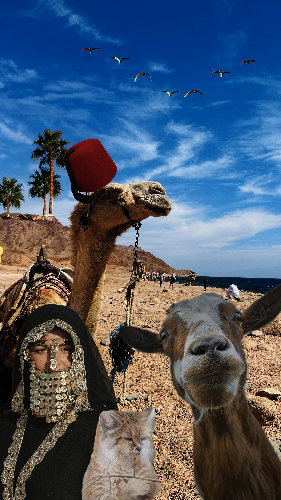

Neem is a 32 y/o woman, from Dahab, Saiani, Egypt. Neem is feminin, strong, and independent. She's also curious, quiet, friendly and kind. Her crew is a camel 'ZaZa' and a cat 'Basbousa' and her tiny goat 'Tossa'. Knows every hidden path through the mountains. Can tell if a sand storm is coming by watching the sky. Loves gatherings around a fire and listening to stories from elders. Collects handmade objects because she belives that every handmade thing carries a piece of someone's heart. Feels happiest watching the sunrise over the mountains, and the sunset over the Red Sea.

Sounds of Sainai